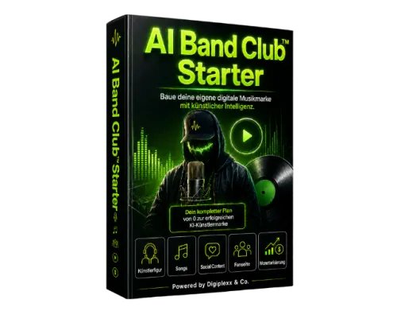
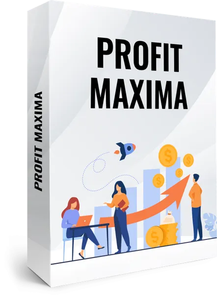

AI Band Club™ Starter– KI-Tool für digitale Musikmarken
Produktprofil · Marktplatz-Daten 2026-10-14 · Verkaufsseiten-Recherche 2026-10-14 · Kategorien: Business & Investment, Computer & Internet, Marketing Services
- AI Band Club™ Starter– KI-Tool für digitale Musikmarken ist ein/e Software in Business & Investment und Computer & Internet, vertrieben über den Digistore24-Marktplatz von Anbieter smartboostAI, gelistet seit 2026-06-27.
- Listenpreis $197.43 (subscription, installment) — Checkout, Auslieferung und Rückerstattungen laufen über Digistore24 selbst, nicht über den Anbieter.
- Käuferschutz: keine standardisierte Garantie-Formulierung gefunden — Rückerstattungsbedingungen vor der Zahlung auf der offiziellen Seite prüfen.
Interesse an AI Band Club™ Starter– KI-Tool für digitale Musikmarken? Aktueller Preis, Boni und Garantiebedingungen finden Sie auf der offiziellen Seite des Anbieters:
Offizielle Verkaufsseite ansehen
Affiliate-Link (Werbung) — wir verdienen ggf. eine Provision, ohne Mehrkosten für Sie.

Marktplatz-Daten
| Produkttyp | Software |
|---|---|
| Preis | $197.43 (Subscription, Installment) |
| Garantie/Rückgabe | Laut Verkaufsseite des Anbieters — vor dem Kauf auf der offiziellen Seite prüfen |
| Anbieter | smartboostAI (gelistet seit 2026-06-27) |
Marktplatz-Beschreibung des Anbieters
KI-Musik wächst brutal – aber die meisten erstellen nur einzelne Songs, die nach 24 Stunden wieder im Feed verschwinden. AI Band Club™ verkauft den besseren nächsten Schritt: ein KI-Tool, mit dem Nutzer aus einer Musikidee eine komplette digitale Musikmarke vorbereiten – mit Artist-Konzept, Songideen, Content-Winkeln, Fanseite, Monetarisierung und Release-Struktur. Das Produkt passt perfekt für Creator, Marketer, Musiker, KI-Interessierte, digitale Unternehmer und alle, die den Musikmarkt nicht nur beobachten, sondern daraus ein eigenes digitales Projekt aufbauen wollen. Warum Affiliates dieses Produkt bewerben sollen: ✓ starker Trend: KI-Musik, virtuelle Artists und digitale Musikmarken ✓ klares Problem: einzelne KI-Songs reichen nicht aus ✓ verständliches Angebot: Tool statt Theorie ✓ mehrere Zielgruppen: Creator, Marketer, Musiker, Reseller, digitale Unternehmer ✓ starke Verkaufslogik: vom Song zur Musikmarke ✓ Upsell-Potenzial durch ProPlan, Global Sound Radar™ und Release-Vorbereitung AI Band Club™ ist kein weiterer KI-Musik-Hype. Es ist ein strukturiertes Tool-System, das Nutzern zeigt, wie sie aus Idee, Sound, Artist, Content und Fan-Zugang eine digitale Musikmarke vorbereiten. Jetzt als Affiliate bewerben und ein Produkt promoten, das direkt auf einen wachsenden KI- und Musiktrend einzahlt.
Von der Verkaufsseite des Anbieters
Seitentitel: AI Band Club™ Starter – optionaler nächster Schritt
Meta-Beschreibung: Optionaler nächster Schritt nach deinem KI-Musikmarken Blueprint™ Kauf. AI Band Club™ Starter ist der Software-Zugang zum Umsetzen.
Recherche-Methode: rohes HTML · 8 Wörter · Qualität: thin · recherchiert am 2026-10-14. Vollständige Recherche-Datei (MD) ↗
Wie Produkte dieser Art geliefert werden
Allgemeiner Hinweis zu diesem Produkttyp (keine anbieterspezifische Anleitung): Software wird digital geliefert — entweder als direkter Download oder per Lizenzschlüssel/Mitgliederbereich nach dem Checkout. Für die genaue Anwendung von AI Band Club™ Starter– KI-Tool für digitale Musikmarken sind die offizielle Verkaufsseite und die enthaltenen Materialien maßgeblich.
Gut zu wissen
- Hoher Preis: $197.43 ist eine erhebliche Ausgabe — prüfen Sie, ob es einen Zahlungsplan gibt, und vergleichen Sie zuerst die günstigeren Alternativen der Kategorie.
- Keine Garantie-Formulierung in unserer Recherche gefunden — bestätigen Sie das Rückgabefenster auf der offiziellen Seite, bevor Sie kaufen.
Was ist AI Band Club™ Starter– KI-Tool für digitale Musikmarken?
AI Band Club™ Starter– KI-Tool für digitale Musikmarken ist ein/e software in der Kategorie Business & Investment des Digistore24-Marktplatzes, veröffentlicht von Anbieter smartboostAI und im Verkauf seit 2026-06-27. Der Anbieter beschreibt es so: "KI-Musik wächst brutal – aber die meisten erstellen nur einzelne Songs, die nach 24 Stunden wieder im Feed verschwinden. AI Band Club™ verkauft den besseren nächsten Schritt: ein KI-Tool, mit dem Nutzer aus einer Musikidee eine komplette digitale Musikmarke vo" (Marktplatz-Beschreibung des Anbieters, leicht gekürzt).
AI Band Club™ Starter– KI-Tool für digitale Musikmarken Preis: was Sie zahlen
Der Marktplatz listet AI Band Club™ Starter– KI-Tool für digitale Musikmarken zum $197.43 Preis (subscription, installment). Digistore24 fügt im Checkout die gesetzliche Steuer Ihres Landes hinzu — dort sehen Sie den Endbetrag vor der Zahlung. Eine separate Plattformgebühr gibt es nicht; Anbieter können eigene Upsells nach dem Checkout anbieten.
AI Band Club™ Starter– KI-Tool für digitale Musikmarken Rückerstattung und Geld-zurück-Garantie
Wir haben keine standardisierte Garantie-Formulierung auf der Verkaufsseite gefunden. Rückerstattungen für Digistore24-Käufe laufen über die Plattform: Antrag über den Support-Link in Ihrer Bestell-E-Mail, innerhalb des Garantiezeitfensters, das im Checkout angezeigt wird. Praktischer Rat: Entscheiden Sie innerhalb des Fensters — wenn das Produkt unter den Erwartungen bleibt, erstatten lassen statt irren lassen.
Mechanik im Detail: So funktionieren Digistore24-Rückerstattungen.
Für wen ist AI Band Club™ Starter– KI-Tool für digitale Musikmarken geeignet?
Basierend auf der Business & Investment-Einordnung und der subscription, installment-Abrechnung richtet sich AI Band Club™ Starter– KI-Tool für digitale Musikmarken an Käufer, die business & investment-Lösungen suchen und ein Budget für einen Premium-Kauf eingeplant haben. Der ehrliche Test ist nicht die Kategorie, sondern Ihre eigene Situation: Werden Sie es realistisch innerhalb des Garantiefensters nutzen? Wenn ja, ist der Preis eine Investition; wenn nein, ist er Ballast — unabhängig von der Qualität.
Ist AI Band Club™ Starter– KI-Tool für digitale Musikmarken seriös? Was Sie vor dem Kauf prüfen
Wir bewerten keine Seriosität — das kann niemand, ohne das Produkt zu nutzen. Prüfbare Punkte, alle auf dieser Seite: die Marktplatz-Historie des Anbieters (im Verkauf seit 2026-06-27), die wörtlichen Verkaufsseiten-Auszüge unten (gekennzeichnet als Anbieteraussagen — deren Werbung, nicht unsere Empfehlung), die Garantiebedingungen im Checkout und die Auslieferungsart. Vorsichtsignale bei jedem Angebot: Countdown-Dringlichkeit gepaart mit vagen Rückerstattungsbedingungen, Testimonials ohne Datum und Anbieterseiten, die den Preis bis zum Checkout verstecken.
Wie kommen Sie nach dem Kauf an AI Band Club™ Starter– KI-Tool für digitale Musikmarken?
Der Checkout läuft über Digistore24. Nach der Zahlung: Software wird digital geliefert — entweder als direkter Download oder per Lizenzschlüssel/Mitgliederbereich nach dem Checkout. Bewahren Sie die Bestell-E-Mail auf — sie ist Ihr Schlüssel zum/d zur software, zu Rückerstattungsanträgen und zum Digistore24-Käufersupport.
AI Band Club™ Starter– KI-Tool für digitale Musikmarken Erfahrungen: so recherchieren Sie richtig
Die meisten „Erfahrungsberichte" zu Marktplatz-Produkten sind Affiliate-Inhalte — einschließlich Seiten wie dieser, die an Käufen mitverdienen. Behandeln Sie jeden Bericht (auch unseren) als Ausgangspunkt und prüfen Sie gegen Primärquellen: die Verkaufsseite des Anbieters, die Digistore24-Rückerstattungsrichtlinie und — für business & investment — unabhängige Communities außerhalb des Affiliate-Ökosystems. Auf dieser Seite sind die Verkaufsseiten-Auszüge unten wörtlich zitiert, damit Sie die Aussagen des Anbieters bewerten können, ohne wegzuklicken.
Wie Sie AI Band Club™ Starter– KI-Tool für digitale Musikmarken sicher kaufen
- Öffnen Sie die offizielle Verkaufsseite und lesen Sie das vollständige Angebot.
- Bestätigen Sie Endpreis und Garantiezeitfenster auf der Digistore24-Kassenseite — sie ist bindend, kein Vergleichsportal.
- Zahlen Sie innerhalb des Digistore24-Checkouts (niemals per Überweisung oder Off-Platform-Links).
- Speichern Sie die Bestellbestätigung; notieren Sie die Rückerstattungsfrist im Kalender.
- Prüfen Sie zügig. Der Digistore24-Käufersupport hilft, wenn der Anbieter nicht reagiert.
Vollständiges Recherche-Archiv für dieses Produkt (Markdown: kompletter Marktplatz-Datensatz + wörtliche Verkaufsseiten-Auszüge): AI Band Club™ Starter– KI-Tool für digitale Musikmarken — Datenarchiv (.md).
- Listenpreis & Abrechnung — Quelle: offizielle Digistore24-Marktplatz-API, Stand 2026-10-14. Maßgeblich für den aktuellen Preis ist immer die Kassenseite.
- Verkaufsseiten-Zitate — Quelle: https://aibandclub.com/ai-band-club-starter-upsell, abgerufen 2026-10-14 (Methode: rohes HTML). Verify: offizielle Seite öffnen.
- Garantie / Rückgabe — vom Anbieter festgelegt; vor dem Kauf auf der Verkaufsseite bestätigen.
- Nicht von uns geprüft: Produktqualität, Ergebnisse, Testimonials — kein Praxistest für dieses Listing durchgeführt.
Häufige Fragen zu AI Band Club™ Starter– KI-Tool für digitale Musikmarken
Antworten aus dem Marktplatz-Snapshot (2026-10-14) und der Verkaufsseiten-Recherche (2026-10-14); Anbieteraussagen sind inline gekennzeichnet.
Was ist AI Band Club™ Starter– KI-Tool für digitale Musikmarken?
AI Band Club™ Starter– KI-Tool für digitale Musikmarken ist ein Angebot des Typs „Software" im Digistore24-Marktplatz, Anbieter: smartboostAI, gelistet seit 2026-06-27. Eingepflegt unter Business & Investment und Computer & Internet. Digistore24 wickelt Checkout, Lieferung und Rückgaben ab.
Wie viel kostet AI Band Club™ Starter– KI-Tool für digitale Musikmarken?
Der Digistore24-Marktplatz listet es für $197.43 (subscription, installment). Preise legt der Anbieter fest und können sich ändern — der Marktplatz-Eintrag oben zeigt den Schnappschuss; die offizielle Verkaufsseite zeigt den aktuellen Preis.
Gibt es eine Geld-zurück-Garantie für AI Band Club™ Starter– KI-Tool für digitale Musikmarken?
Unsere Verkaufsseiten-Recherche hat keine explizite Garantie-Formulierung gefunden. Viele Digistore24-Produkte bieten 60 Tage Geld-zurück, aber das legt jeder Anbieter selbst fest — bestätigen Sie es auf der offiziellen Verkaufsseite, bevor Sie kaufen.
Ist AI Band Club™ Starter– KI-Tool für digitale Musikmarken seriös?
Wir bewerten keine Seriosität — wir veröffentlichen überprüfbare Zahlen: Anbieter smartboostAI (gelistet seit 2026-06-27), mit der vollständigen Verkaufsseiten-Recherche archiviert auf dieser Seite (Anbieteraussagen als solche gekennzeichnet). Lesen Sie unsere 6-Punkte-Bewertungsmethode und entscheiden Sie anhand der Zahlen — oder diskutieren Sie AI Band Club™ Starter– KI-Tool für digitale Musikmarken auf GitHub.
Wo kann ich AI Band Club™ Starter– KI-Tool für digitale Musikmarken sicher kaufen?
Nur über die offizielle Verkaufsseite, die auf dieser Seite verlinkt ist (Checkout und Rückgaben laufen über Digistore24). Prüfen Sie dort Preis und Garantie vor der Bestellung. Der Link ist ein Affiliate-Link — der Kauf unterstützt diese Website ohne Mehrkosten für Sie.
Wie erhalte ich AI Band Club™ Starter– KI-Tool für digitale Musikmarken nach der Zahlung?
Der Checkout läuft über Digistore24: Nach der Zahlung erhalten Sie Zugangsdaten und Ihr Abo-Dashboard. Lieferdetails für diesen Produkttyp: Software wird digital geliefert — entweder als direkter Download oder per Lizenzschlüssel/Mitgliederbereich nach dem Checkout. Bei Problemen kann der Digistore24-Käufersupport Ihre Bestellung wiederherstellen.
Alle 50 Käuferfragen zu Business & Investment — das komplette Kategorie-FAQ.
AI Band Club™ Starter– KI-Tool für digitale Musikmarken auf Reddit diskutieren
In Community-Threads vergleichen echte Käufer Erfahrungen. Wir verlinken Communities, keine einzelnen Posts — Threads verschwinden, Subreddits bleiben:
- r/Finanzen — deutschsprachige Community mit Diskussionen zu business & investment.
- Reddit-Suche nach „AI Band Club™ Starter– KI-Tool für digitale Musikmarken" — Live-Ergebnisse, von uns nicht beeinflusst.
- Top-„Erfahrungs"-Treffer dieses Jahr — selbst nach Aktualität filtern.
Passendes auf Amazon.de
Physische Produkte und Zubehör, die häufig zusammen mit AI Band Club™ Starter– KI-Tool für digitale Musikmarken gekauft werden:
- Software auf Amazon.de — Top-Ergebnisse, Amazon-Ranking.
- Bestseller: Software — live Liste von Amazon, von uns nicht kuratiert.
Werbung: Als Amazon-Partner verdient DigistorePicks DE an qualifizierten Käufen (Partner-tag adminstorede-21). Amazon setzt eigene Preise und Provisionen (niedrige einstellige Prozente — weit unter den 30–75% der Digistore24-Anbieter). Amazon ist ein Convenience-Angebot für Sachprodukte, kein Ersatz für das digitale Produkt oben.
Ähnliche Angebote in Business & Investment

SHOWUP 3 Monate Strategie- und Umsetzungsbegleitung für dein Business. Du steckst Zeit und Arbeit in deinen Content, feilst an Angeboten und denkst über deine P

Bewerbe die Nummer #1 Online NFT & Web3 Masterclass für NFT & Web3 Investoren und Anleger. Beschreibung: Eine Masterclass. Eine Plattform. Alles dabei.

1.048,32 € Provision bei erfolgreichem Verkauf – ohne den Abschluss selbst führen zu müssen. Du erreichst Menschen mit Immobilienvermögen, Unternehmer, Kapitala

Verdiene 50% Provision mit der #1 Masterclass für Online-Kurs-Business Promote das kostenlose Online Training „Online Kurse erstellen und passiv verkaufen mit K
Weitere Angebote von smartboostAI
Gesamtes Sortiment: smartboostAI Anbieter-Hub — alle Listings mit Marktplatz-Daten.

VERA-X AI Business Engine™ ist ein vollständig aufgebautes KI-Business-System für Unternehmen. Statt nur Software zu verkaufen, erhält der Kunde eine komplette

Das AI Business System™ ist ein geführtes Copy-&-Paste-System für Menschen, die mit künstlicher Intelligenz ein eigenes digitales Produkt aufbauen wollen –

AI Agent Empire 2.0 positioniert dich mitten in einem der größten Wachstumsmärkte 2026. Unternehmen stehen massiv unter Druck: Sie müssen Leads gewinnen, Anfra

Ultra Business-Setup – Fertiger Online-Shop direkt startklar Das Ultra Business-Setup liefert einen komplett eingerichteten Online-Shop , der sofort einsatzfähi
AI Band Club™ Starter– KI-Tool für digitale Musikmarken ist auch gelistet in
Computer & Internet (317 Produkte) · Marketing-Dienstleistungen (287 Produkte)
Ähnliche Preislage in Business & Investment

Verdiene jetzt monatlich wiederkehrende, hohe Provisionen mit der Schmiede für automatisiertes Einkommen Biete deinen Kontakten eine geniale Möglichkeit, sich e

THE FUTURE SELF – Persönlichkeitsentwicklung neu gedacht Ein neuartiges KI-Produkt an der Schnittstelle von Persönlichkeitsentwicklung, Identität und Zukunft. T

55% Provision! Bewirb jetzt das App Cash System und verdiene maximale Provision! - 55% Provision auf das erste Produkt im Funnel (47€) - Starker Upsell-Funnel m

Profite einfach steigern! Monetarisiere jedes Projekt, mehrfach. Für alle Affiliates eine klasse Chance. Denn du bekommst auf dieses Produkt 40% Provision + Ups
Ähnliche Suchanfragen
Wo Sie es sich ansehen können
Wo Sie es sich ansehen können
Aktuelle Preise, Garantie und Boni finden Sie auf der offiziellen Verkaufsseite:
Offizielle Verkaufsseite ansehen
Das ist ein Affiliate-Link (Werbung) — kaufen Sie darüber, verdienen wir ggf. eine Provision, ohne Mehrkosten für Sie.
Quellen & weiterführende Informationen
- Offizielle Verkaufsseite (aktueller Preis, Garantie, Boni): aibandclub.com/ai-band-club-starter-upsell (Affiliate-Link)
- Öffentliche Digistore24-Produktseite: checkout-ds24.com/product/704756
- Vollständige Recherche-Datei (Markdown, versioniert): content/products/57147-ai-band-club-starter-ki-tool-f-r-digitale-musikmarken.md
- Affiliate-Supportseite des Anbieters: aibandclub.com/affiliate-zugang
- Marktplatz-Kategorie: Business & Investment
Wie wir Produkte wie AI Band Club™ Starter– KI-Tool für digitale Musikmarken bewerten
Sechs Prüfungen, ausschließlich mit offiziellen Marktplatz-Zahlen. Die vollständige Bewertungsmethode lesen · unsere Recherche-Standards & Kennzeichnung.
Fragen oder eigene Erfahrungen mit AI Band Club™ Starter– KI-Tool für digitale Musikmarken?
Praxis-Tests veröffentlichen wir erst, nachdem wir ein Produkt selbst gekauft haben — aber Ihre Erfahrung hilft anderen Lesern: Diskussion zu AI Band Club™ Starter– KI-Tool für digitale Musikmarken auf GitHub starten/verfolgen. Falsche Zahl gefunden? Korrektur melden — jede Seite zeigt ihre Datenstände, Korrekturen gelten für die ganze Website.